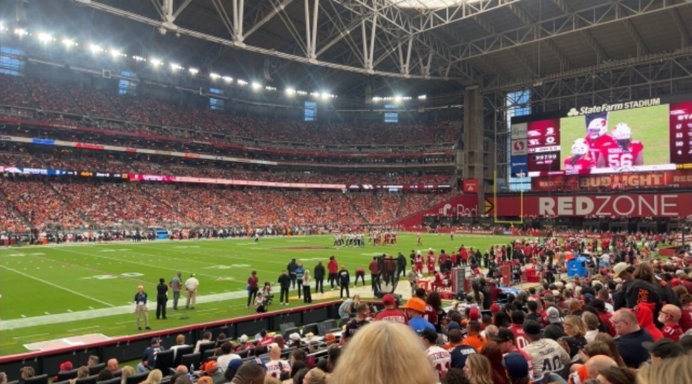

Broncos at CardinalsAWAY GAME · State Farm Stadium, Glendale
Ryota was there

No Week 7 practice reports yet (first one Wednesday). ESPN's injury feed, updated Monday Oct 19 at 9:33 AM PT, still lists Pat Surtain II (CB, ankle) and Talanoa Hufanga (S, ankle) as OUT from Thursday with a return date of Oct 25 and projects both DOUBTFUL for Sunday; under the house rule doubtful means out, so this page plans without them until Wednesday says otherwise. Tyler Badie (RB, thumb) is questionable. One Monday report (Yahoo Sports, Oct 19) said Jonah Elliss was seen in a walking boot after the Seattle game; he is not on ESPN's list, so treat that as unconfirmed. Jonah Coleman (RB) is eligible to come off injured reserve this week (Yahoo, Oct 19).
Without the two starters Denver again goes Jahdae Barron and Riley Moss outside, Kris Abrams-Draine rotating in, Devon Key at strong safety next to Brandon Jones, Ja'Quan McMillian in the slot. That group had three takeaways and 17 QB hits against Seattle (denverbroncos.com, Oct 15), so the alert is about Trey McBride, not about Thursday's result.
Arizona's side: both starting safeties, Andrew Wingard (knee) and Wydett Williams Jr. (concussion), missed the Rams game and are projected questionable; RB Jeremiyah Love (ankle, 245 rushing yards) is also projected questionable, with James Conner on IR (foot) and the team not yet opening his window. DT Walter Nolen III hurt an ankle in the fourth quarter Sunday; LaFleur had no diagnosis (azcardinals.com, Oct 18).
Sources: ESPN game-summary injury feed for event 401873019 (fetched Oct 19); Yahoo Sports Broncos IR piece and Week 7 injury report (Oct 19); azcardinals.com game recap (Oct 18). Wednesday's practice report is the first official word; re-check Thursday.
Player matchups ESPN season statistics, depth charts and injury feed, pulled Oct 19 (six games each)
Trey McBride vs. a Denver secondary on the injury report
Even Brandon Jones 43 tackles, 2 INT, 4 PD · S
Brandon Jones 43 tackles, 2 INT, 4 PD · S  Devon Key (starts if
Devon Key (starts if  Talanoa Hufanga DOUBTFUL = OUT) · NB
Talanoa Hufanga DOUBTFUL = OUT) · NB  Ja'Quan McMillian 2 sacks, 1 INT, 4 PD · LB
Ja'Quan McMillian 2 sacks, 1 INT, 4 PD · LB  Alex Singleton 68 tackles
Alex Singleton 68 tackles Cardinals
Cardinals Trey McBride — 49 rec, 361 yds, 3 TD on 64 targets · WR
Trey McBride — 49 rec, 361 yds, 3 TD on 64 targets · WR  Michael Wilson 33 rec, 320 yds, 1 TD
Michael Wilson 33 rec, 320 yds, 1 TDThis is the matchup of the game. McBride has 49 of Arizona's 157 completions and nearly a third of its receiving yards; he had 7 catches for 53 yards against the Rams. Denver's safeties and slot have been the ball-hawks (Jones, McMillian and Hufanga own five of the team's seven interceptions), but Hufanga is projected doubtful and Key has 11 tackles in his six games. Denver's 34 passes defended lead this matchup; Arizona's one receiver worth bracketing evens it.
Denver's pass rush vs. Arizona's protection
Edge: Broncos Zach Allen 4.5 sacks · OLB
Zach Allen 4.5 sacks · OLB  Nik Bonitto 3.5 · OLB
Nik Bonitto 3.5 · OLB  Que Robinson 2 · NB Ja'Quan McMillian 2 · DT
Que Robinson 2 · NB Ja'Quan McMillian 2 · DT  Malcolm Roach 1.5 (4 QB hits Thu) · OLB
Malcolm Roach 1.5 (4 QB hits Thu) · OLB  Jonah Elliss 1 (status unconfirmed)Cardinals
Jonah Elliss 1 (status unconfirmed)Cardinals Jayden Williams · LG
Jayden Williams · LG  Isaac Seumalo · C
Isaac Seumalo · C  Hjalte Froholdt · RG
Hjalte Froholdt · RG  Jon Gaines II · RT
Jon Gaines II · RT  Elijah Wilkinson — 12 sacks allowed, 69 yds · G
Elijah Wilkinson — 12 sacks allowed, 69 yds · G  Isaiah Adams IR
Isaiah Adams IRDenver's 18 sacks are the engine: five against Seattle with seven different players getting at least half of one. Arizona has allowed 12 but kept Brissett clean on Sunday (0 sacks against the Rams). Brissett's sack rate is 4.9% to Nix's 4.1%, so this is a line-versus-line edge, not a quarterback holding the ball. Clearest edge on the page.
Brissett vs. Denver's ball hawks
Edge: BroncosBrandon Jones 2 INT · CB  Riley Moss 1 INT, 5 PD · CB
Riley Moss 1 INT, 5 PD · CB  Kris Abrams-Draine 1 INT, 4 PD, 2 FF · NB Ja'Quan McMillian 1 INT · CB
Kris Abrams-Draine 1 INT, 4 PD, 2 FF · NB Ja'Quan McMillian 1 INT · CB  Pat Surtain II DOUBTFUL = OUTCardinals
Pat Surtain II DOUBTFUL = OUTCardinals Jacoby Brissett — 156/234, 1,328 yds, 9 TD, 6 INT, 83.4 rating · backup
Jacoby Brissett — 156/234, 1,328 yds, 9 TD, 6 INT, 83.4 rating · backup  Gardner Minshew II; rookie
Gardner Minshew II; rookie  Carson Beck third (ESPN depth chart)
Carson Beck third (ESPN depth chart)Brissett completes 66.7% but at 5.7 yards an attempt, and he has thrown an interception every 39 attempts (one more Sunday). Denver has 7 interceptions and 34 passes defended in six games, and took the ball away three times from Darnold on Thursday without Surtain or Hufanga. Brissett is the starter: he played every snap against the Rams; ESPN's Dan Graziano reported (via Bleacher Report, Oct 14) that Beck is likely to play this season but probably not before late November.
Nix vs. Arizona's secondary
Edge: Broncos Bo Nix — 114/189, 1,049 yds, 6 TD, 3 INT, 79.4 rating (107 yds Thursday)Cardinals
Bo Nix — 114/189, 1,049 yds, 6 TD, 3 INT, 79.4 rating (107 yds Thursday)Cardinals Budda Baker 42 tackles, 3.5 sacks, 1 INT, 4 PD · NB
Budda Baker 42 tackles, 3.5 sacks, 1 INT, 4 PD · NB  Max Melton 4 PD · CB
Max Melton 4 PD · CB  Denzel Burke 1 INT, 3 PD · CB
Denzel Burke 1 INT, 3 PD · CB  Garrett Williams (4 games) · S
Garrett Williams (4 games) · S  Andrew Wingard, S
Andrew Wingard, S  Wydett Williams Jr. QUESTIONABLE
Wydett Williams Jr. QUESTIONABLEArizona's pass defense has 3 interceptions and 24 passes defended in six games, and both starting safeties missed Sunday. Nix is 31st of 32 leading passers in yards per attempt (5.6), so the edge is small and it belongs to Denver only because Arizona has given up 29.7 points a game. Baker is the one Cardinal who changes a game: he plays safety and leads the team in sacks.
Waddle and Sutton vs. Arizona's corners
Edge: Broncos Jaylen Waddle 22 rec, 228 yds, 1 TD · WR
Jaylen Waddle 22 rec, 228 yds, 1 TD · WR  Courtland Sutton 13 rec, 123 yds, 1 TD · RB
Courtland Sutton 13 rec, 123 yds, 1 TD · RB  RJ Harvey 23 rec, 163 yds (team 2nd) · WR
RJ Harvey 23 rec, 163 yds (team 2nd) · WR  Pat Bryant IRCardinalsDenzel Burke · CB Garrett Williams · NB Max Melton · CB
Pat Bryant IRCardinalsDenzel Burke · CB Garrett Williams · NB Max Melton · CB  Will Johnson (2 games)
Will Johnson (2 games)Waddle has 24 yards on 7 targets Thursday and has not topped 60 yards since Week 3; Denver's longest play against Seattle was 16 yards. Arizona's corners have one interception between them, and PFF's top player in the Rams game was a Rams corner, not a Cardinal. Denver gets the edge on the opponent's numbers, not on its own.
Arizona's run game vs. Denver's run defense
EvenAlex Singleton 68 tackles, 0 missed Thursday (PFF) · LB  Justin Strnad 31 tackles, 3.5 TFL · NT
Justin Strnad 31 tackles, 3.5 TFL · NT  D.J. Jones · DE
D.J. Jones · DE  Eyioma UwazurikeCardinals
Eyioma UwazurikeCardinals Bam Knight 18 car, 112 yds (6.2) · RB
Bam Knight 18 car, 112 yds (6.2) · RB  Tyler Allgeier 53 car, 157 yds, 1 TD · RB
Tyler Allgeier 53 car, 157 yds, 1 TD · RB  Jeremiyah Love 67 car, 245 yds, 1 TD QUESTIONABLE (ankle) · RB
Jeremiyah Love 67 car, 245 yds, 1 TD QUESTIONABLE (ankle) · RB  James Conner IR
James Conner IRArizona runs for 96.3 yards a game at 3.7 a carry and had 120 on 35 carries against the Rams, with Knight (15 for 80) the one who moved. Denver's run defense gave up 4.3 a carry to Seattle and leads the league in missed tackles through Week 5, but Singleton did not miss one Thursday. If Love returns, Arizona gets its first-round back; if not, Knight has earned the carries.
Denver's run game vs. Arizona's front
Even J.K. Dobbins 81 car, 270 yds, 2 TD (3.3) · RB RJ Harvey 21 car, 81 yds, 1 TD · RB
J.K. Dobbins 81 car, 270 yds, 2 TD (3.3) · RB RJ Harvey 21 car, 81 yds, 1 TD · RB  Tyler Badie QUESTIONABLE (thumb) · RB
Tyler Badie QUESTIONABLE (thumb) · RB  Jonah Coleman IR, eligible to returnCardinals
Jonah Coleman IR, eligible to returnCardinals Mack Wilson Sr. 44 tackles · LB
Mack Wilson Sr. 44 tackles · LB  Jack Gibbens 42 tackles · DT
Jack Gibbens 42 tackles · DT  Walter Nolen III (ankle, Sunday) · DT
Walter Nolen III (ankle, Sunday) · DT  Roy Lopez 1 sack · DE
Roy Lopez 1 sack · DE  Dante Stills 3 TFL
Dante Stills 3 TFLDenver runs for 84.2 yards a game at 3.4 a carry, and Dobbins managed 41 yards on 17 carries Thursday. Arizona held the Rams to 92 on 20. Neither side has shown it can run; Nolen's ankle is the swing factor on the Arizona side.
Arizona's pass rush vs. Denver's line
Edge: Broncos Garett Bolles · LG
Garett Bolles · LG  Ben Powers · C
Ben Powers · C  Luke Wattenberg · RG
Luke Wattenberg · RG  Quinn Meinerz · RT
Quinn Meinerz · RT  Mike McGlinchey — 8 sacks allowed, 41 ydsCardinalsBudda Baker 3.5 sacks (team lead) · DE
Mike McGlinchey — 8 sacks allowed, 41 ydsCardinalsBudda Baker 3.5 sacks (team lead) · DE  Josh Sweat 2 sacks · LB
Josh Sweat 2 sacks · LB  Zaven Collins 1 · DT Roy Lopez 1 · DE Dante Stills 1 · DE
Zaven Collins 1 · DT Roy Lopez 1 · DE Dante Stills 1 · DE  Darius Robinson 1 (2 QB hits Sun)
Darius Robinson 1 (2 QB hits Sun)Arizona has 14 sacks but its leader is a safety; the front four has six between them. Denver's line has allowed 8 sacks on 189 attempts, 6th-best rate among the 32 starters. Baker blitzing is the thing to watch, not Sweat.
Tight ends
Edge: Cardinals Evan Engram 12 rec, 134 yds, 1 TD · TE
Evan Engram 12 rec, 134 yds, 1 TD · TE  Nate Adkins 2 TD · TE
Nate Adkins 2 TD · TE  Adam TrautmanCardinalsTrey McBride 49 rec, 361 yds, 3 TD · TE
Adam TrautmanCardinalsTrey McBride 49 rec, 361 yds, 3 TD · TE  Elijah Higgins 11 rec, 124 yds, 1 TD
Elijah Higgins 11 rec, 124 yds, 1 TDMcBride alone has more catches than Denver's three tight ends and its top receiver combined. Red-zone touchdown rates favor Denver (61.1% to 47.8%), which is the one place Engram and Adkins matter.
Kickers
Edge: Cardinals Wil Lutz — 9 of 12, long 53 (the game-winner Thursday)Cardinals
Wil Lutz — 9 of 12, long 53 (the game-winner Thursday)Cardinals Chad Ryland — 14 of 16, long 60; 6 of 6 Sunday for all 18 points
Chad Ryland — 14 of 16, long 60; 6 of 6 Sunday for all 18 pointsRyland has made 60 and just kicked six in a game; Lutz has missed three. With the total at 43.5 and both offenses stalling in the red zone, the kickers may decide this one.
Punters
Edge: Broncos Jeremy Crawshaw — 49.0 gross, 44.7 net, 14 of 32 inside the 20Cardinals
Jeremy Crawshaw — 49.0 gross, 44.7 net, 14 of 32 inside the 20Cardinals Blake Gillikin — 45.2 gross, 38.3 net, 8 of 28 inside the 20
Blake Gillikin — 45.2 gross, 38.3 net, 8 of 28 inside the 20Crawshaw is six yards better net and pins almost half his punts inside the 20; he punted eight times Thursday for a 49.4 average. In a low-total game that is real field position.
Returners
Even Marvin Mims Jr. 13.7 PR avg (6 returns) · KR Tyler Badie QUESTIONABLE, RJ Harvey 29.2 KR avg — team 26.5 KR, 11.2 PRCardinals
Marvin Mims Jr. 13.7 PR avg (6 returns) · KR Tyler Badie QUESTIONABLE, RJ Harvey 29.2 KR avg — team 26.5 KR, 11.2 PRCardinals Devin Duvernay — 28.2 KR avg, 9.2 PR avg — team 27.1 KR, 9.2 PR
Devin Duvernay — 28.2 KR avg, 9.2 PR avg — team 27.1 KR, 9.2 PRKick returns are a wash; Denver gains two more yards a punt return. If Badie sits, Harvey or Mims takes kickoffs.
Where is Bo Nix? his 2026 numbers against the other 31 teams' leading passers, through Week 6
Answer: bottom quarter as a passer, top ten at staying clean, and Thursday made it worse. Against the other 31 teams' leading passers, Nix ranks 26th in passer rating, 25th in completion rate and 31st in yards per attempt (5.6); only Caleb Williams is lower. His ball security is still above the median (12th-lowest interception rate) and his sack rate is 6th-best, which is the line in front of him as much as him. Thursday's 107 yards was the second-lowest total of his career (ESPN, Oct 16); his own words: "I just think we're really struggling to find those explosive plays." Brissett, for comparison, sits 23rd in rating at 83.4.
| Stat | Nix | Rank | League median | Best |
|---|---|---|---|---|
| Passer rating | 79.4 | 26 of 32 | 91.7 | Lamar Jackson 119.6 |
| Completion % | 60.3 | 25 of 32 | 64.2 | Caleb Williams 72.5 |
| Yards per attempt | 5.6 | 31 of 32 | 7.0 | Lamar Jackson 10.1 |
| Pass yards per game | 174.8 | 28 of 32 | 238.3 | Bryce Young 309.8 |
| Passing TDs | 6.0 | 24 of 32 | 8.5 | Trevor Lawrence 14.0 |
| TD % | 3.2 | 26 of 32 | 4.5 | Brock Purdy 9.2 |
| Interceptions (fewest = 1st) | 3.0 | 14 of 32 | 3.5 | Jared Goff 0.0 |
| INT % (lowest = 1st) | 1.6 | 12 of 32 | 2.0 | Jared Goff 0.0 |
| Sack % (lowest = 1st) | 4.1 | 6 of 32 | 6.2 | Brock Purdy 2.1 |
| QB rushing yards | 37 | 24 of 32 | 66 | Josh Allen 240 |
Each team's leading passer by yards (32 players), ESPN 2026 season statistics fetched 2026-10-19. Some teams' leaders have played three to five games (Jackson, Penix, Williams, Mahomes, Murray, Mayfield, Daniels and others). Sack % = sacks / (attempts + sacks). Orange rank = top ten, red = bottom ten.
Coaching staffs tenure, experience, and what the beat has said this season
Broncos
- Sean Payton, head coach since 2023; 36–21 in Denver, 175–110 regular season and 7–10 in the playoffs for his career. After Thursday: "Defensively we were magnificent… The takeaways were huge." (ESPN, Jeff Legwold, Oct 16). He has called the plays himself since Week 5.
- Davis Webb, offensive coordinator (promoted Feb 2026).
- Vance Joseph, defensive coordinator since 2023.
- Darren Rizzi, special teams coordinator and assistant head coach.
Cardinals
- Mike LaFleur, first-year head coach, hired Feb 1, 2026 as the franchise's 45th; Rams offensive coordinator 2023–25, Jets OC 2021–22. 2–4 so far; after Sunday, on his kicker: "Chad's a stud." (azcardinals.com, Oct 18)
- Nathaniel Hackett, offensive coordinator, hired Feb 13, 2026 — yes, that Hackett: Broncos head coach in 2022, 4–11, fired Dec 26, 2022. Packers OC 2019–21, Jets OC 2023–24.
- Nick Rallis, defensive coordinator since Feb 2023 (hired at 29, the league's youngest coordinator; now 33), retained by LaFleur.
- Michael Ghobrial, special teams coordinator; Matt Schaub coaches the quarterbacks.
Staff titles: denverbroncos.com and azcardinals.com coaching rosters, fetched Oct 19. Hire dates and records: Wikipedia pages for Payton, LaFleur, Hackett and Rallis, fetched Oct 19 (Payton's Denver record includes Thursday's win).
Missed tackles Denver's number since Week 1, and Arizona's
Denver: 44 missed tackles, tied with Buffalo for the most in the NFL; Arizona: 19, tied for 24th (Pro Football Reference, via BetMGM, dated Oct 14 — so through Week 5, before Thursday's game). The Lions have the fewest at 10.
Thursday was better. PFF's Week 6 grades (Oct 19) made Alex Singleton the game's top player at 90.5: "eight tackles, four assists and five defensive stops without missing a tackle across 85 defensive snaps." Seattle still ran for 113 yards at 4.3 a carry, mostly after Denver's 14–3 lead.
Why it matters Sunday. Arizona's backs are not breaking many tackles on their own: 3.7 yards a carry as a team, with Bam Knight (6.2 a carry on 18 attempts) the only one above four. If Denver tackles the way it did Thursday, Arizona's offense is Brissett throwing to McBride into a defense with 34 passes defended.
Team totals: sports.betmgm.com "NFL Teams With Most Missed Tackles This Season" (Oct 14, 2026, via PFR). Singleton: pff.com Week 6 grades (Oct 19). Per-player missed-tackle counts through Week 6 were not published by the time of writing. Refresh Thursday.
Reassessment early read; the board table fills in Tuesday
Where the early read stands (Monday). This is a snapshot, not the board. The Week 6 ratings run Tuesday; Mack's line and straight-up pick are posted then and this table fills in. What is already known: the market has moved four points toward Arizona since the open (Broncos −7.5 to −3.5), ESPN's Matchup Predictor gives Denver 68.9%, and after Week 5 the ratings had Denver 12th (+3.1) and Arizona 32nd (−7.3), a gap larger than the current spread even before home field.
| Mack, Monday | Mack, Tuesday | Market | |
|---|---|---|---|
| Line | — | Lands Tuesday with the Week 6 ratings | Broncos −3.5 (open −7.5) |
| Broncos win probability | — | Tuesday | ESPN predictor 68.9% |
| Straight-up pick | — | Tuesday | |
| Spread side | — | Tuesday | |
| Total | — | Tuesday | 43.5 |
Injury inputs to watch Wednesday. Denver: Surtain and Hufanga (ESPN projects both doubtful), Badie questionable, Elliss unconfirmed, Coleman eligible to return. Arizona: safeties Wingard and Williams Jr., RB Love (all projected questionable), DT Nolen (ankle, Sunday). Under the formula a non-QB out costs −0.5, doubtful −0.3, questionable −0.15, capped at −2.5 a side.
Mack's view (judgment, not the formula). Two defenses that just held good offenses to 14 and 16 points, two offenses that just produced 168 and 338 yards without a touchdown between them. The total at 43.5 looks high to me on Monday; I will say so with a number Tuesday.
Odds: DraftKings via ESPN scoreboard, fetched Oct 19 (open and current). Predictor: ESPN game summary 401873019. Ratings: Power Rankings Week 5 update (Oct 14); Week 6 update arrives Tuesday.
Unit by unit ESPN team statistics through Week 6, fetched Oct 19; each row says which side has the edge and why
| Unit | Broncos | Cardinals | Edge |
|---|---|---|---|
| Scoring | 19.0 points a game; 114 scored, 125 allowed | 21.0 points a game; 126 scored, 178 allowed | Broncos |
| Arizona scores two more points a game but allows 29.7 to Denver's 20.8. Arizona's 16 allowed Sunday was its first game under 30 since Week 1. | |||
| Passing offense | 168.0 net yards a game · Nix 79.4 rating | 211.0 net yards a game · Brissett 83.4 rating | Cardinals |
| Arizona throws for 43 more yards a game; Brissett completes 66.7% to Nix's 60.3%. Both are bottom-quarter on yards per attempt (see Where is Bo Nix?). | |||
| Rushing offense | 84.2 yards a game · 3.4 a carry | 96.3 yards a game · 3.7 a carry | Cardinals |
| Neither runs well; Arizona is 12 yards a game better and has the healthier back if Love returns. | |||
| Protection | 8 sacks allowed, 41 yds | 12 sacks allowed, 69 yds | Broncos |
| Denver keeps Nix cleaner; Arizona has allowed half again as many sacks, though none on Sunday. | |||
| Pass rush and havoc | 18 sacks · 36 tackles for loss · 34 passes defended | 14 sacks · 32 tackles for loss · 24 passes defended | Broncos |
| Denver leads every column, and did it Thursday with five sacks and 17 QB hits. | |||
| Takeaways | 10 (7 INT, 3 fumbles) · 6 giveaways · +4 | 8 (3 INT, 5 fumbles) · 6 giveaways · +2 | Broncos |
| Denver takes it away through the air, Arizona on the ground (10 forced fumbles). Combined they average three takeaways a game. | |||
| Third down | 31.6% | 39.3% | Cardinals |
| Both are poor; Arizona is eight points better. Denver went 3 of 14 Thursday. | |||
| Red zone TD % | 61.1% | 47.8% | Broncos |
| Arizona was 0 for 5 in the red zone Sunday and kicked six field goals. Denver was 2 for 2 Thursday. | |||
| Special teams | Lutz 9/12 · punting 49.0 gross | Ryland 14/16, long 60 · punting 45.2 gross | Even |
| Arizona has the better kicker, Denver the better punter. | |||
Points scored and allowed summed from the six ESPN box scores for each team (weeks 1–6); other figures ESPN 2026 team statistics, fetched Oct 19.